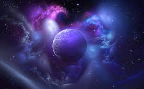

Со́лнечная систе́ма — планетная система, включающая в себя центральную звезду — Солнце — и все естественные космические объекты, вращающиеся вокруг Солнца. Она сформировалась путём гравитационного сжатия газопылевого облака примерно 4,57 млрд лет назад.
Бо́льшая часть массы объектов Солнечной системы приходится на Солнце; остальная часть содержится в восьми относительно уединённых планетах, имеющих почти круговые орбиты и располагающихся в пределах почти плоского диска — плоскости эклиптики. Общая масса системы составляет около 1,0014 M☉. При таком распределении масс особенностью кинематики системы является противоречащее ожидаемому распределение моментов импульсов вращения между Солнцем и планетами, т. н. «Проблема моментов»: на долю Солнца, масса которого в ~740 раз больше общей массы планет, приходится всего 2 % общего момента системы, а остальные 98 % на ~0,001 общей массы Солнечной системы.
Четыре ближайшие к Солнцу планеты, называемые планетами земной группы, — Меркурий, Венера, Земля и Марс — состоят в основном из силикатов и металлов. Четыре более удалённые от Солнца планеты — Юпитер, Сатурн, Уран и Нептун (также называемые газовыми гигантами) — намного более массивны, чем планеты земной группы. Крупнейшие планеты Солнечной системы, Юпитер и Сатурн, состоят главным образом из водорода и гелия; меньшие газовые гиганты, Уран и Нептун, помимо водорода и гелия, содержат в составе своих атмосфер метан и угарный газ. Такие планеты выделяются в отдельный класс «ледяных гигантов». Шесть планет из восьми и четыре карликовые планеты имеют естественные спутники. Юпитер, Сатурн, Уран и Нептун окружены кольцами пыли и других частиц.

В Солнечной системе существуют две области, заполненные малыми телами. Пояс астероидов, находящийся между Марсом и Юпитером, схож по составу с планетами земной группы, поскольку состоит из силикатов и металлов. Крупнейшими объектами пояса астероидов являются карликовая планета Церера и астероиды Паллада, Веста и Гигея. За орбитой Нептуна располагаются транснептуновые объекты, состоящие из замёрзшей воды, аммиака и метана, крупнейшими из которых являются Плутон, Седна, Хаумеа, Макемаке, Квавар, Орк и Эрида. В Солнечной системе существуют и другие популяции малых тел, такие как планетные квазиспутники и троянцы, околоземные астероиды, кентавры, дамоклоиды, а также перемещающиеся по системе кометы, метеороиды и космическая пыль.
Солнечный ветер (поток плазмы от Солнца) создаёт пузырь в межзвёздной среде, называемый гелиосферой, который простирается до края рассеянного диска. Гипотетическое облако Оорта, служащее источником долгопериодических комет, может простираться на расстояние примерно в тысячу раз дальше гелиосферы.
Солнечная система входит в состав галактики Млечный Путь.
Со́лнечная систе́ма — планетная система, включающая в себя центральную звезду — Солнце — и все естественные космические объекты, вращающиеся вокруг Солнца. Она сформировалась путём гравитационного сжатия газопылевого облака примерно 4,57 млрд лет назад. Бо́льшая часть массы объектов Солнечной системы приходится на Солнце; остальная часть содержится в восьми относительно уединённых планетах, имеющих почти круговые орбиты и располагающихся в пределах почти плоского диска — плоскости эклиптики. Общая масса системы составляет около 1,0014 M☉. При таком распределении масс особенностью кинематики системы является противоречащее ожидаемому распределение моментов импульсов вращения между Солнцем и планетами, т. н. «Проблема моментов»: на долю Солнца, масса которого в ~740 раз больше общей массы планет, приходится всего 2 % общего момента системы, а остальные 98 % на ~0,001 общей массы Солнечной системы. Четыре ближайшие к Солнцу планеты, называемые планетами земной группы, — Меркурий, Венера, Земля и Марс — состоят в основном из силикатов и металлов. Четыре более удалённые от Солнца планеты — Юпитер, Сатурн, Уран и Нептун (также называемые газовыми гигантами) — намного более массивны, чем планеты земной группы. Крупнейшие планеты Солнечной системы, Юпитер и Сатурн, состоят главным образом из водорода и гелия; меньшие газовые гиганты, Уран и Нептун, помимо водорода и гелия, содержат в составе своих атмосфер метан и угарный газ. Такие планеты выделяются в отдельный класс «ледяных гигантов». Шесть планет из восьми и четыре карликовые планеты имеют естественные спутники. Юпитер, Сатурн, Уран и Нептун окружены кольцами пыли и других частиц. В Солнечной системе существуют две области, заполненные малыми телами. Пояс астероидов, находящийся между Марсом и Юпитером, схож по составу с планетами земной группы, поскольку состоит из силикатов и металлов. Крупнейшими объектами пояса астероидов являются карликовая планета Церера и астероиды Паллада, Веста и Гигея. За орбитой Нептуна располагаются транснептуновые объекты, состоящие из замёрзшей воды, аммиака и метана, крупнейшими из которых являются Плутон, Седна, Хаумеа, Макемаке, Квавар, Орк и Эрида. В Солнечной системе существуют и другие популяции малых тел, такие как планетные квазиспутники и троянцы, околоземные астероиды, кентавры, дамоклоиды, а также перемещающиеся по системе кометы, метеороиды и космическая пыль. Солнечный ветер (поток плазмы от Солнца) создаёт пузырь в межзвёздной среде, называемый гелиосферой, который простирается до края рассеянного диска. Гипотетическое облако Оорта, служащее источником долгопериодических комет, может простираться на расстояние примерно в тысячу раз дальше гелиосферы. Солнечная система входит в состав галактики Млечный Путь.
Со́лнечная систе́ма — планетная система, включающая в себя центральную звезду — Солнце — и все естественные космические объекты, вращающиеся вокруг Солнца. Она сформировалась путём гравитационного сжатия газопылевого облака примерно 4,57 млрд лет назад. Бо́льшая часть массы объектов Солнечной системы приходится на Солнце; остальная часть содержится в восьми относительно уединённых планетах, имеющих почти круговые орбиты и располагающихся в пределах почти плоского диска — плоскости эклиптики. Общая масса системы составляет около 1,0014 M☉. При таком распределении масс особенностью кинематики системы является противоречащее ожидаемому распределение моментов импульсов вращения между Солнцем и планетами, т. н. «Проблема моментов»: на долю Солнца, масса которого в ~740 раз больше общей массы планет, приходится всего 2 % общего момента системы, а остальные 98 % на ~0,001 общей массы Солнечной системы. Четыре ближайшие к Солнцу планеты, называемые планетами земной группы, — Меркурий, Венера, Земля и Марс — состоят в основном из силикатов и металлов. Четыре более удалённые от Солнца планеты — Юпитер, Сатурн, Уран и Нептун (также называемые газовыми гигантами) — намного более массивны, чем планеты земной группы. Крупнейшие планеты Солнечной системы, Юпитер и Сатурн, состоят главным образом из водорода и гелия; меньшие газовые гиганты, Уран и Нептун, помимо водорода и гелия, содержат в составе своих атмосфер метан и угарный газ. Такие планеты выделяются в отдельный класс «ледяных гигантов». Шесть планет из восьми и четыре карликовые планеты имеют естественные спутники. Юпитер, Сатурн, Уран и Нептун окружены кольцами пыли и других частиц. В Солнечной системе существуют две области, заполненные малыми телами. Пояс астероидов, находящийся между Марсом и Юпитером, схож по составу с планетами земной группы, поскольку состоит из силикатов и металлов. Крупнейшими объектами пояса астероидов являются карликовая планета Церера и астероиды Паллада, Веста и Гигея. За орбитой Нептуна располагаются транснептуновые объекты, состоящие из замёрзшей воды, аммиака и метана, крупнейшими из которых являются Плутон, Седна, Хаумеа, Макемаке, Квавар, Орк и Эрида. В Солнечной системе существуют и другие популяции малых тел, такие как планетные квазиспутники и троянцы, околоземные астероиды, кентавры, дамоклоиды, а также перемещающиеся по системе кометы, метеороиды и космическая пыль. Солнечный ветер (поток плазмы от Солнца) создаёт пузырь в межзвёздной среде, называемый гелиосферой, который простирается до края рассеянного диска. Гипотетическое облако Оорта, служащее источником долгопериодических комет, может простираться на расстояние примерно в тысячу раз дальше гелиосферы. Солнечная система входит в состав галактики Млечный Путь.